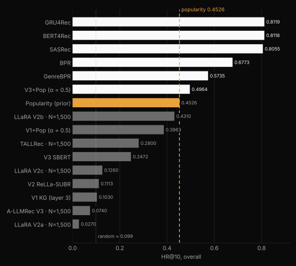
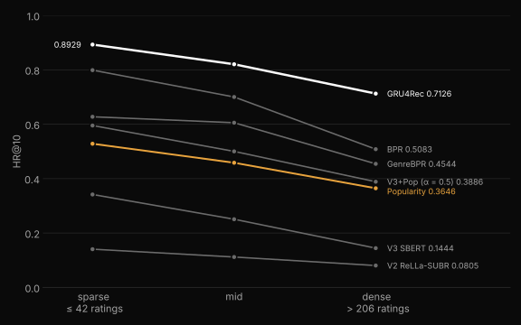
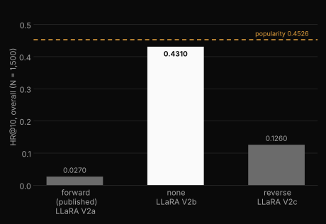

do LLMs help a recommender?
For our master's thesis at EPITA, four of us tested whether LLM, text-retrieval and knowledge-graph augmentation make sequential recommendation better, and whether the gain lands on users with thin histories. Every model ran under one protocol on MovieLens-1M: leave-one-out splits, each held-out film ranked against 100 sampled negatives, scored with HR@10, NDCG@10 and MRR@10, overall and per density stratum.
Short version: on this dataset, no. A tuned classical model beat every augmented one, and the best augmented method only matched recommending popular films.
sixteen configurations, one ranking
Classical sequential models sit at the top: GRU4Rec 0.8119, BERT4Rec 0.8118, SASRec 0.8055. Only one augmented method clears the popularity prior: V3+Pop, an SBERT and popularity hybrid, at 0.4964. Every fine-tuned LLM variant, every pure retrieval method and the knowledge-graph variant land below popularity. Several sit near the random floor of 10/101.

Show the full table (Table 5.1, HR@10)
| Method | Family | N | Sparse | Mid | Dense | Overall |
|---|---|---|---|---|---|---|
| GRU4Rec | Classical CF | 6,040 | 0.8929 | 0.8206 | 0.7126 | 0.8119 |
| GRU4Rec | Classical CF | 1,500 | 0.8720 | 0.8340 | 0.7040 | 0.8110 |
| BERT4Rec | Classical CF | 6,040 | 0.8811 | 0.8235 | 0.7179 | 0.8118 |
| BERT4Rec | Classical CF | 1,500 | 0.8560 | 0.8380 | 0.6980 | 0.8080 |
| SASRec | Classical CF | 6,040 | 0.8890 | 0.8149 | 0.7019 | 0.8055 |
| SASRec | Classical CF | 1,500 | 0.8760 | 0.8160 | 0.6840 | 0.7980 |
| BPR | Collaborative | 6,040 | 0.7989 | 0.7002 | 0.5083 | 0.6773 |
| BPR | Collaborative | 1,500 | 0.7940 | 0.6980 | 0.4980 | 0.6720 |
| GenreBPR | Content-CF | 6,040 | 0.6275 | 0.6056 | 0.4544 | 0.5735 |
| GenreBPR | Content-CF | 1,500 | 0.6260 | 0.6120 | 0.4320 | 0.5710 |
| V3+Pop (α = 0.5) | SBERT+Pop | 6,040 | 0.5953 | 0.5002 | 0.3886 | 0.4964 |
| Popularity (prior) | Baseline | 6,040 | 0.5283 | 0.4584 | 0.3646 | 0.4526 |
| LLaRA V2b | Hybrid LLM | 1,500 | 0.5140 | 0.4440 | 0.3220 | 0.4310 |
| V1+Pop (α = 0.5) | KG+Pop | 6,040 | 0.4474 | 0.3917 | 0.3134 | 0.3863 |
| TALLRec | LLM (text) | 1,500 | 0.3280 | 0.2860 | 0.2200 | 0.2800 |
| V3 SBERT | Text retrieval | 6,040 | 0.3417 | 0.2507 | 0.1444 | 0.2472 |
| V2 ReLLa-SUBR | Zero-shot LLM | 6,040 | 0.1406 | 0.1118 | 0.0805 | 0.1113 |
| LLaRA V2c | Hybrid LLM | 1,500 | 0.1400 | 0.1140 | 0.1340 | 0.1260 |
| V1 KG (layer 3) | Graph CF | 6,040 | 0.1097 | 0.1035 | 0.0951 | 0.1030 |
| A-LLMRec V3 | LLM-CF adapter | 1,500 | 0.0860 | 0.0720 | 0.0660 | 0.0740 |
| LLaRA V2a | Hybrid LLM | 1,500 | 0.0260 | 0.0180 | 0.0460 | 0.0270 |
sparse users are the easy ones
We expected users with short histories to be the hard case, since that's the cold-start story augmentation is meant to fix. The opposite held for every model we ran. GRU4Rec scores 0.8929 on the sparse stratum and 0.7126 on the dense one, and the popularity prior slopes the same way.

Two things cause it. MovieLens-1M only keeps users with at least 20 ratings, so the sparse bin is the low end of a warm population, not a cold one. And with 100 negatives drawn uniformly, a sparse user's held-out film tends to be a mainstream title that's easy to separate from random ones. The gap worth closing is the dense stratum. No augmentation closed it.
the curriculum ablation
LLaRA trains in stages: text prompts first, then mixed, then hybrid prompts with collaborative IDs. We held the architecture, data, batch size and epoch budget fixed and changed only the staging.

The published forward schedule scored 0.0270. No curriculum scored 0.4310, about sixteen times higher, and the reverse order scored 0.1260. The training-loss traces show why: loss collapsed to near zero within the first tenth of each phase, so the model memorized each phase's prompt format, and the next phase overwrote it. That's catastrophic forgetting. By the time the forward run reached the hybrid format used at evaluation, the earlier learning was gone.
The LLaRA paper reports curriculum gains on MovieLens-100K, Steam and LastFM. On MovieLens-1M the schedule hurt, so we report it as a negative replication.
robustness audit
On a memorization split, text-only retrieval (V3+Pop) fell from 0.7895 on popular, likely-memorized films to 0.0414 on rare ones, while LLaRA V2b, which puts collaborative IDs in the prompt, kept 0.2260. That's the one place augmentation earned its cost.
V3+Pop also ignores history order entirely (0.4964 with the sequence shuffled or not), and its confidence scores are badly miscalibrated, with an expected calibration error of 0.3985.
limitations
- Ranking against 100 sampled negatives inflates absolute hit rates, most of all on sparse users. We rest the conclusions on the ordering between methods, not the absolute numbers.
- SBERT and the Freebase graph vectors were used as static features, not fine-tuned on recommendation pairs. The knowledge-graph result is about those embeddings, not the full K-RagRec pipeline.
- We didn't test a classical model given the same semantic features, so "augmentation doesn't help" and "additive augmentation doesn't help" can't be fully separated.
- The LLM results rest on one backbone (Mistral-7B-Instruct) and one training budget, and our A-LLMRec is a simplified reproduction.
- Everything is on MovieLens-1M, which is dense and widely memorized. Sparser or text-richer domains may behave differently.
what I built from it
Reel History turns a Letterboxd export into film recommendations. It started as a three-person team MVP, I wrote most of its code, and I kept only what the evidence supported.
- A classical model does the ranking. GRU4Rec won every stratum, so it drives the feed for anyone with a real diary. Visitors with no history get popularity, and those with only a little get the content and collaborative retrievers.
- No confidence number is shown raw. With an ECE near 0.40, a raw score would lie, so every card goes through isotonic calibration and shows a label: strong, good, worth a try, or low evidence.
- Augmentation only where it held up. The deep-cuts end of the Rewind dial leans on LLaRA's collaborative embeddings, since the hybrid-ID model was the only method that kept signal on rare films.
- Nothing heavy at serve time. Every model runs once offline and ships as a static asset. Serving is matrix math and lookups on a free CPU Space.
The live app runs on the larger MovieLens-32M catalog. The numbers on this page are from the thesis, on MovieLens-1M.